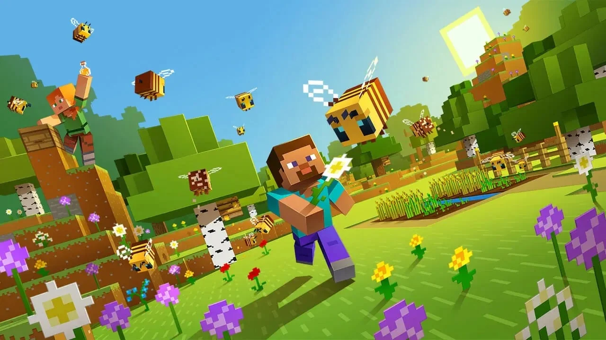
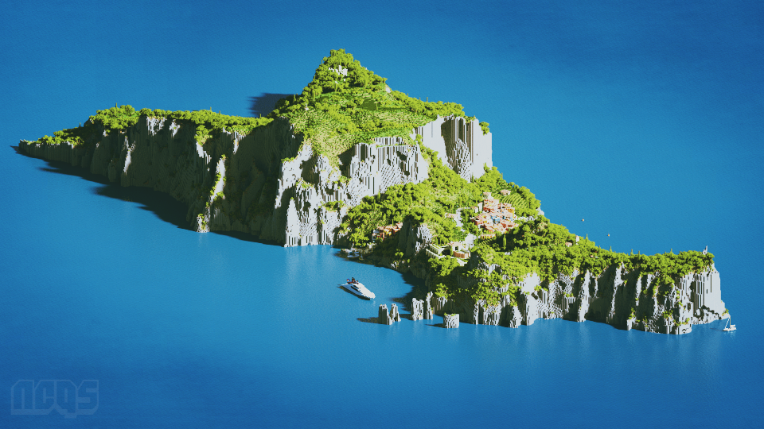

minecraft
in
ulleungdo
in
ulleungdo
project : ulla

마인크래프트가
무엇인가요?
무엇인가요?
메타버스(Metaverse)는
현실과 유사한 환경을 제공하며,
사람들과 상호작용 하고 창작하는 디지털 세계를
가리키는 개념입니다.
사람들과 상호작용 하고 창작하는 디지털 세계를
가리키는 개념입니다.
메타버스는 가상현실(Virtual Reality),
확장현실(Augmented Reality), 3D 월드, 온라인 게임, 소셜 미디어, 가상세계,
사이버 공간 등 다양한
디지털 기술과 플랫폼을 통합하여 구성됩니다.
이러한 환경은 사용자들이 가상으로 활동하고
상호작용하며, 실제 세계와는 다른 규칙과 경험을 제공합니다.
상호작용하며, 실제 세계와는 다른 규칙과 경험을 제공합니다.

PROJECT :
ULLA
ULLA
PROJECT : ULLA는 Minecraft를
이용하여 울릉도의 아름다운 여러 면모의 모습을
구현하는 것입니다.
이용하여 울릉도의 아름다운 여러 면모의 모습을
구현하는 것입니다.
PROJECT : ULLA가 구현이 완료된 이후에는 서버를
개설하여 메타버스 내에 입장할 수 있는 환경을 제공하고 방문객들이 이곳에 구현되어 있는 다양한 컨텐츠를
즐김으로써 사람들의 울릉도에 대한 관심을
가지게 합니다.
개설하여 메타버스 내에 입장할 수 있는 환경을 제공하고 방문객들이 이곳에 구현되어 있는 다양한 컨텐츠를
즐김으로써 사람들의 울릉도에 대한 관심을
가지게 합니다.